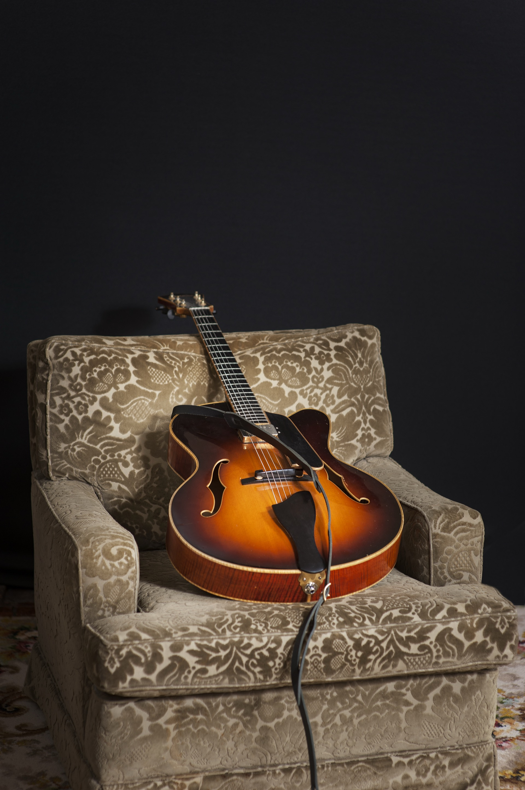

Solo Sam
Solo jazz guitar with influences of Joe Pass, Herb Ellis, Django Reinhardt and more. Perfect for intimate settings, cocktail hours, and dinners.

Jazz Guitarist · Melbourne
Solo jazz guitar, gypsy swing, and classic ensembles for your next event.
I've been chasing the sound of old strings and worn-out records for as long as I can remember. Influenced by the greats — Joe Pass, Herb Ellis, Django Reinhardt, Benny Goodman — I play jazz guitar across Melbourne as a soloist and with several ensembles.
Whether it's an intimate dinner, a corporate function, or a festival stage, I bring the warmth of classic jazz and swing to every performance.
Available groups for your event
Solo jazz guitar with influences of Joe Pass, Herb Ellis, Django Reinhardt and more. Perfect for intimate settings, cocktail hours, and dinners.

French swing in the style of Django Reinhardt. Authentic gypsy jazz that brings the energy of a Parisian jazz club to your event.

Swing clarinet and guitar duo in the style of Benny Goodman. A charming pairing that fills any room with classic swing.

American swing from the 1930s and '40s. Three-piece classic standards that get people smiling and tapping their feet.
Interested in booking an ensemble for your event? Get in touch and I'll get back to you.
Request a Quote